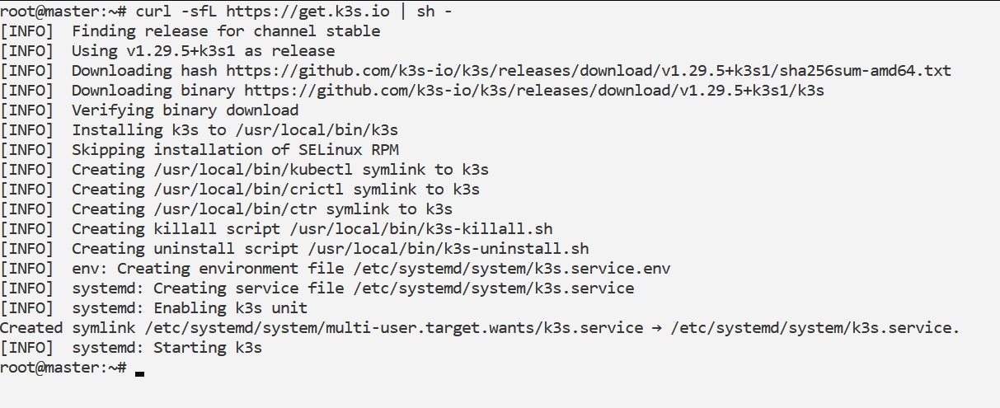
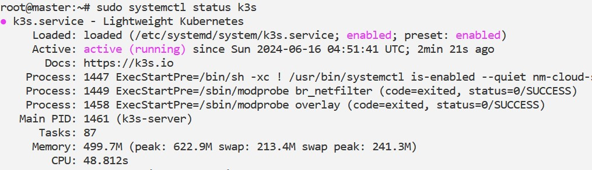

Table of Contents
Steps to make a K3s Cluster with one Master and one Worker node
1. Install K3s on the Master Node
SSH into your master node and run the following command to install K3s:
curl -sfL https://get.k3s.io | sh -
This command downloads and installs K3s along with its dependencies. After installation, K3s should automatically start running as a systemd service.
To check the status of K3s, you can use:
systemctl status k3s
References
- Author, A. (2022). Book Title. Publisher.
- Author, B. (2020). Article Title. Journal Title, 10(2), 12-15.